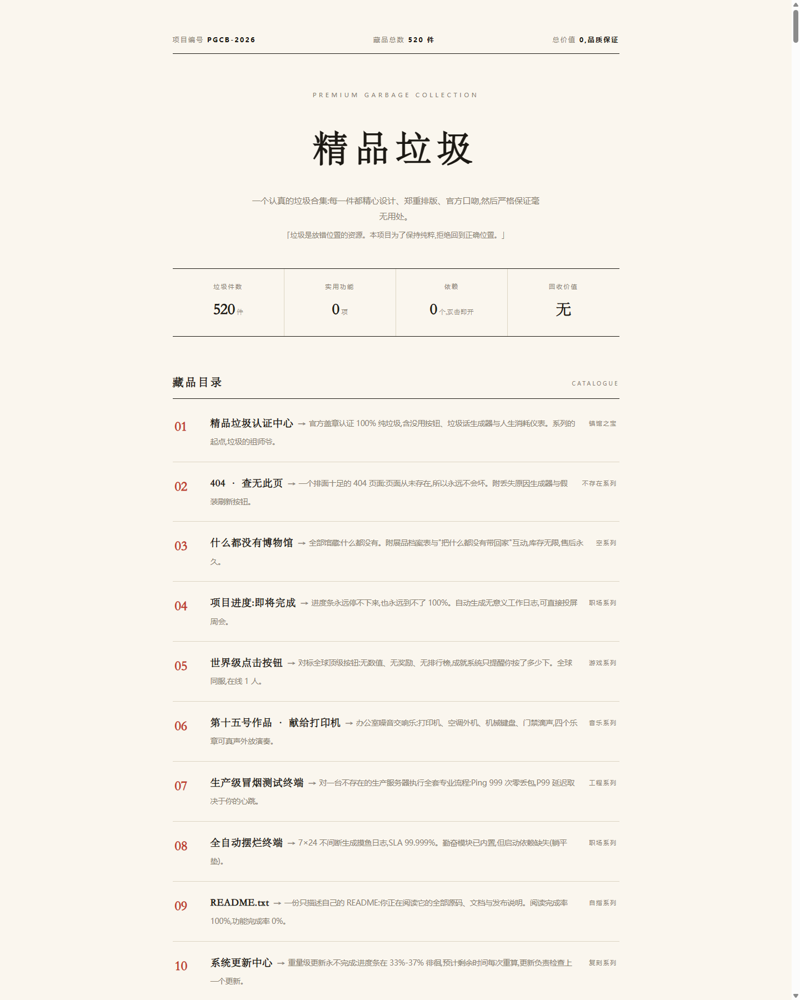
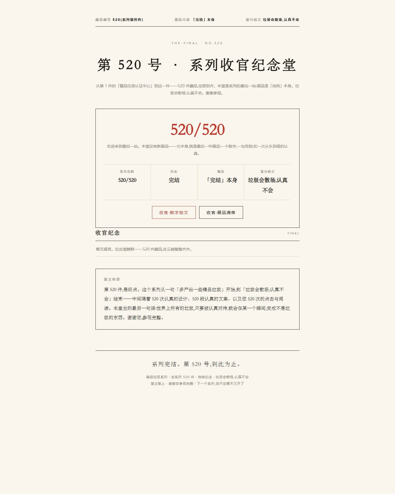

520 件精心设计、郑重排版、官方口吻的藏品,至此全部到齐。
展品是「完结」本身——垃圾会散场,认真不会。
| 检查项 | 工具 | 范围 | 结果 |
|---|---|---|---|
| 静态质检(语法/ID/标签) | audit.js | 520 页 + 目录 | ✓ 未发现结构性问题 |
| 运行时 DOM 体检 | runtime-audit.js(无头 Edge --dump-dom) | 收官批 78 页 | ✓ 0 问题 |
| 控制台异常体检 | runtime-audit2.js(--enable-logging) | 收官批 78 页 | ✓ 0 真实问题 |
| 编号完整性对账 | recon 脚本 | index 链接 / 磁盘文件 / batch 声明 | ✓ 520 = 520 = 520(前 32 件为手工时代遗珠,无 batch 源,属正常历史) |
| 概念查重 | dedupe-check.js | 488 件 batch 声明 | ✓ 0 重复(4 组同根文件名逐一核实互异) |
定时炉时代的压缩版遗稿在收官阶段覆盖了工作区源文件(内容与已上线页面一致,仅格式不同)。已恢复为真正产出线上页面的入库版本,工作区回归干净。
仓库长期裸奔无 README。已补建:项目介绍、三无标准、设计规范、仓库结构、生产线五步流程。README 仅渲染于 GitHub 仓库页,Pages 站点不受影响。
chongdianbao 缺 id="took"、naozhong 指标错位、batch17a 引号笔误与孤儿括号、batch17b/batch18b/batch19a/batch19b 四连「]] 后漏逗号」(一键正则修复)、扫描器自身两处 bug(execFileSync 编码 / getElementById 切片)。
第 500 件里程碑,献给全办公室最劳苦的功臣。颁奖词:它突出的不是间盘,是奉献。散会口令:全体——起立,拉伸。
倒数第二件。三则种子留言入驻,墙的使命:见证「这不就是我」——这五个字,是全系列存在的全部理由。
最终件。展品是「完结」本身。铭文一:把无意义的事做得极其认真,认真本身,就是意义。铭文二:一个垃圾系列把终点定在 520——这大概是它能做到的、最不垃圾的事。

